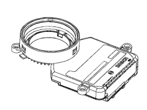

3350EB STEERING ANGLE SENSOR CHECK
- Path
- Test > 33 BRAKES > 3350 TRACTION CONTROL > 3350E VEHICLE DIRECTION CONTROL SYSTEM VDC/ESP > 3350EB STEERING ANGLE SENSOR CHECK
- Kind
- test / check procedure
- Applies to
- all engines; all production periods; only with equipment: ESP
- Interactive page
- https://sloeber94.github.io/elrnDB-fCrm/en/#/194002435
Applies to: all engines; all production periods; only with equipment: ESP
STEP | CHECK TO BE PERFORMED | RESOLUTION IF THE CHECK IS NOT OK |
|---|---|---|
1 | Check power supply (+15)
Move on to Step 2 | Check the continuity of fuse F42 and if broken replace it checking out the cause. |
2 | Check earth connection Disconnect the sensor connector. Connect using an ohmmeter between pin 6 of the sensor and an earth and check that the resistance is less than 1 ohm | Restore the continuity of the earth connection (dashboard area, right side) |
